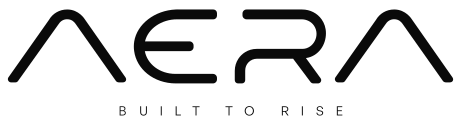
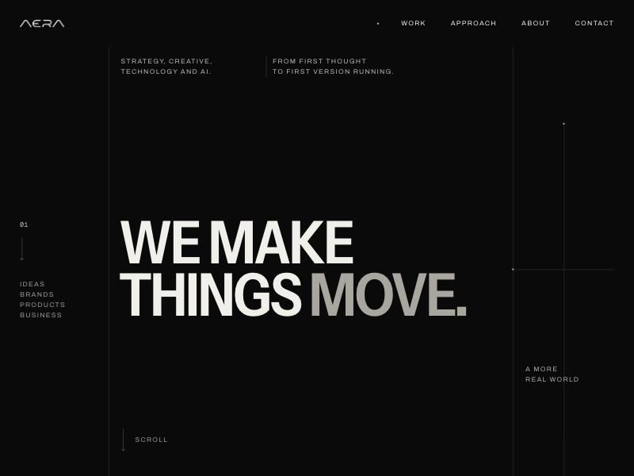
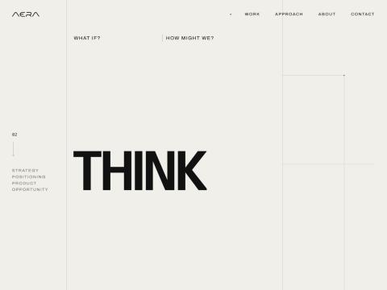
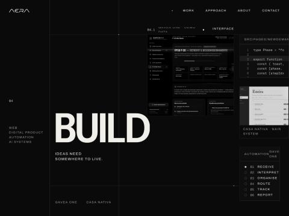
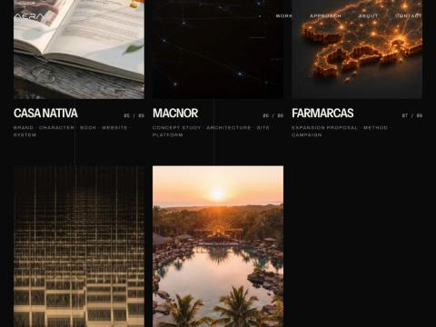
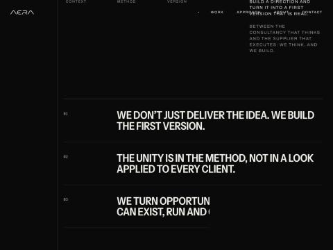
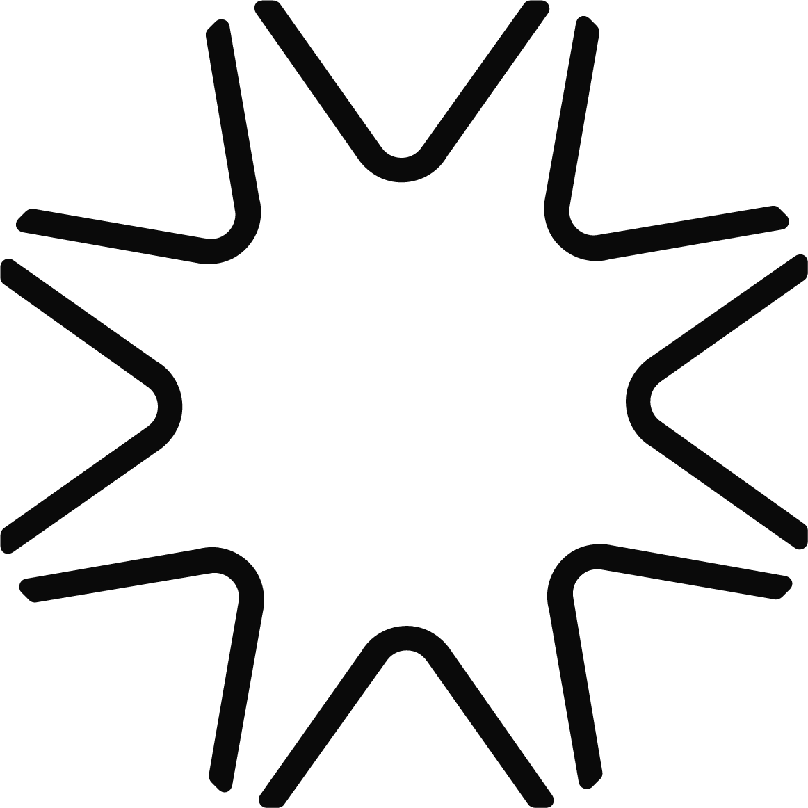
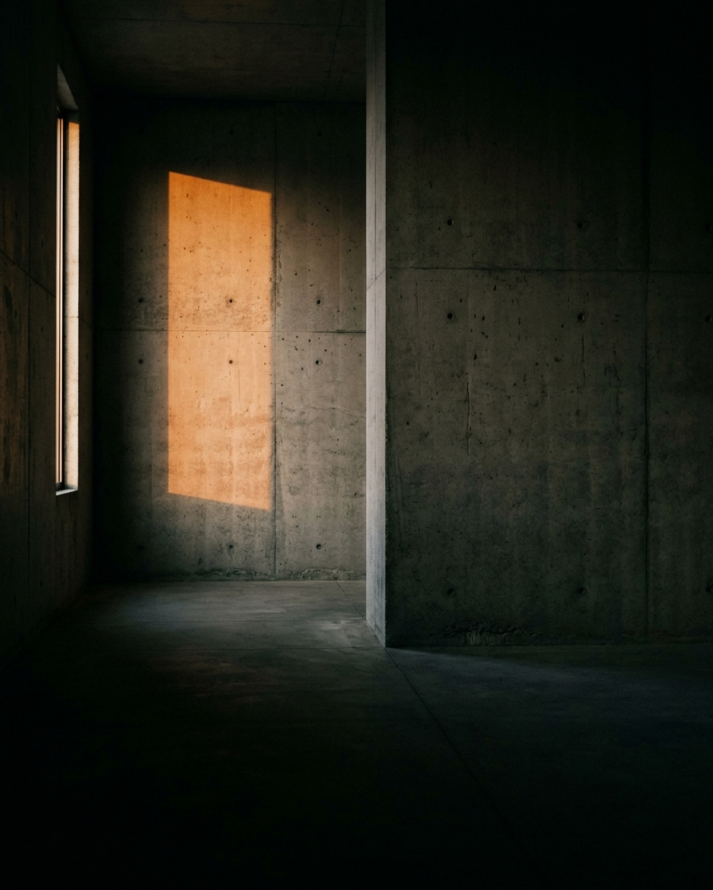

O espaço antes
da coisa.
O sistema visual e verbal da AERA para o AI Office: como o JOHN, a NOA e qualquer IA devem fazer uma peça parecer da mesma mão.
Estratégia, criação, tecnologia e IA01
O sistema visual e verbal da AERA para o AI Office: como o JOHN, a NOA e qualquer IA devem fazer uma peça parecer da mesma mão.
Cada decisão deste documento vem de uma fonte. O que não foi analisado aparece como lacuna, sem invenção.
| Fonte | Situação | Achado principal |
|---|---|---|
| Site aera.company | Lido inteiro | Método numerado, preto e marfim, grid exposto, imagens quentes. |
| Cores e fontes do site | Medidas | #0A0A0A, #F1EFE8, Instrument Sans, Archivo, Geist Mono. |
| Brief do site | Lido | Tom curto, seguro, humano; palavras a evitar. |
| Fatos confirmados | 14 fatos | Confirmados pelo Tiago no cadastro do AI Office. |
| Logotipo e símbolos | 3 peças | Logotipo, monograma A e estrela, todos do arco do A. |
| Briefing com o Tiago | 15 decisões | Direção, cor, caixa, imagem, audiência e temas. |
| Instagram e LinkedIn | Não lidos | Lacuna desta rodada. |






Precisão contra calor. A estrutura é fria e exata; a imagem é quente e humana.
O cliente compra a confiança de que a ideia vai existir. Mostrar o lugar dela comunica isso.
Agências mostram portfólio, consultorias mostram diagnóstico. A AERA mostra o espaço pronto.
Espaços e arquitetura em luz quente.
Tipografia grande como imagem.
Grid, números e rótulos técnicos.
O método em quatro movimentos.
Frases curtas sobre o que faz uma ideia existir.
Pessoas e rostos.
Cara de IA: neon, cérebro, circuito, robô.
Banco de imagem corporativo.
Qualquer cor de destaque.
Frase motivacional e hype.
Um título grande e apertado sobre preto, fios finos nas bordas e uma única foto quente de espaço vazio.
Mesmo sem logo, a peça é reconhecida pelo encontro de grid frio e luz quente.

60% prancha técnica, de onde vem o pensar. 40% still de cinema, de onde vem a coisa já existindo. A tipografia manda; a foto dá a temperatura.
Nenhum elemento gráfico ganha cor. Destaque se faz com tamanho, peso e espaço. A cor da marca entra só pela fotografia.
| Derivado | Uso |
|---|---|
| Marfim 70 | Texto secundário sobre preto |
| Marfim 40 | Rótulos e numeração |
| Marfim 15 | Fios do grid |
Archivo em caixa alta e espaçada. Só em rótulos curtos, como etiqueta de prancha.
Geist Mono para números, datas e metadados. Tempero, nunca texto corrido.
O site grita em caixa alta. Os posts conversam em sentence case, e o título não leva ponto final.
| Nível | Tamanho | Uso |
|---|---|---|
| Display XL | 120 a 140 | Capa, até 5 palavras |
| Display L | 84 a 100 | Título de post, até 8 palavras |
| Display M | 56 a 64 | Título de card |
| Corpo L | 34 a 38 | Texto de card |
| Rótulo | 18 a 20 | Nome de seção |
| Mono | 18 a 22 | Numeração e datas |
O mesmo traço, de espessura uniforme e pontas arredondadas, forma o logotipo, o monograma e a estrela.

Perfil, favicon, carimboPadrão: assinatura num canto ou marcador de numeração, de 24 a 40 px.
Grande: só em peça tipográfica sem foto, no máximo uma a cada quatro peças.
Sempre cortada pela borda, como nesta página. Nunca inteira no centro.
Nunca atrás de foto, colorida ou girada fora de 45 graus.
Em movimento: gira devagar ou abre os oito arcos. Nunca pulsa.
Margem em peça de 1080 px.
Fio do grid a 15% de opacidade.
Unidade de espaço. Tudo em múltiplos.
Raio de canto. Tudo reto.
Stills de filme sem atores: a cena está pronta, alguma coisa vai acontecer ali. Imagem sobre lugar e clima, não sobre objeto.

Uma fonte, lateral ou de cima, 2700 a 3200 K.
Profunda, fundindo com o preto da peça.
35 a 50 mm, na altura do olho ou abaixo.
Uma aresta forte que continua um fio do grid.
Concreto, gesso, pedra, madeira escura, vidro.
Grão fino de filme. Nada de brilho ou HDR.
Banco de imagem corporativo. Escritório claro, aperto de mão, equipe sorrindo.
Cara de IA. Neon azul e roxo, cérebro, circuito, robô, partículas.
3D brilhante genérico. Plástico flutuando, cromado, liso demais.
Aparelho flutuando. Interface só real e dentro de um espaço.
Peça cheia. O que faz a AERA é o espaço vazio. Se há dois destaques, tire um.
| Segura | arrogante |
| Curta | seca |
| Humana | informal demais |
| Precisa | técnica demais |
| Curiosa | deslumbrada |
primeira versão · construir · rodar · existir · método · direção · oportunidade · negócio inteiro
soluções inovadoras · transformador · disruptivo · 360 · apaixonados por · inglês sem função
Português, com inglês só de acento.
Sentence case, nunca travessão.
A IA nunca é o sujeito da frase.
Nenhum número sem fonte.
Empresa média, de R$ 30 a 150 milhões, no Rio ou em São Paulo. Quer tirar do papel uma expansão, um produto ou um sistema. Decide em reunião curta, lê LinkedIn à noite.
Quem pensa e constrói. Uma primeira versão rápido.
Slide bonito que some. Consultoria que não executa.
Peça avulsa pelo menor preço.
A IA como mágica ou promessa.
Decisão sem dono, comitê infinito.
"Faz igual ao concorrente."
O método: pensar, criar, construir, operar.
A primeira versão e o bastidor.
Decisões de projeto, com o ok do Tiago.
O negócio inteiro.
A IA como ferramenta.
Notícia e hype de IA.
Motivação e frase de efeito.
Política e polêmica.
Data comemorativa genérica.
Autopromoção vazia.
Pauta pelo filtro.
Texto e conceito.
Direção visual e quantas imagens.
Libera o lote de imagens.
Gera, monta e revisa contra o DNA.
Aprova e publica.
| Essência | O espaço antes da coisa. |
|---|---|
| Cor | Preto e marfim. A luz é a terceira cor. |
| Tipografia | Instrument Sans em sentence case, Archivo, Geist Mono. |
| Imagem | Espaço e arquitetura, luz de lâmpada, sem pessoas. |
| Voz | Curta, segura, humana. Como quem já fez. |
| Limite | Nada de cara de IA, banco de imagem ou peça cheia. |
| Regra final | Se houver dúvida, corte um elemento. |